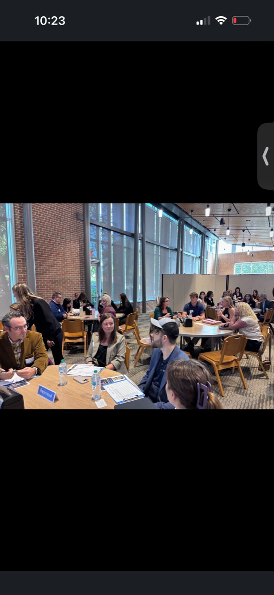
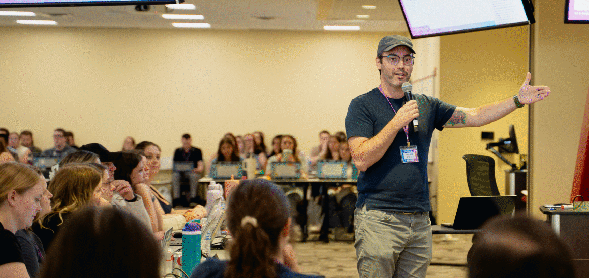

Anthropic
Claude Certified Architect
Foundations
Claude application architecture, agent workflows, context management, and tool integration.
- Issued
- July 12, 2026
- Expires
- July 12, 2027
Performance marketing · Measurement · Applied AI
Marketing judgment.
Technical depth.
I’m Christopher Varner, a measurement-driven performance marketer and Head of Results Innovation at WebFX. I lead a cross-functional team building measurement infrastructure and practical AI systems, while staying hands-on in acquisition strategy.
01 / Expertise
I connect the marketing decision to the data, platform, and workflow needed to make it happen.
See how my career connectsBuild the path from data ingestion to analysis and reporting. Examine attribution, model the contribution of marketing, and use experiments to test what a result means.
Work directly in acquisition platforms, from campaign structure and bidding to audience, creative, and landing-page tests. Connect the platform settings to the business question.
Design agents and workflows around actual marketing tasks. Combine tool access, context, orchestration, and human review so the work can be inspected and improved.
I lead and orchestrate a team of five developers, one marketer, and three AI subject matter experts. I turn marketing problems into roadmaps and engineering specifications, coordinate the work, and mentor specialists.
02 / Career
A career across marketing, consulting, innovation, and community leadership.
WebFX
WebFX
WebFX
CLV Sales & Services
Carlisle Downtown Association
03 / Credentials
Formal credentials in Claude application architecture and Google Cloud engineering.
Claude application architecture, agent workflows, context management, and tool integration.
Deploying and operating Google Cloud applications and infrastructure using the console and command line.
Millersville University of Pennsylvania
04 / How I work
I can work through the measurement, make decisions inside the platform, and turn that judgment into a repeatable workflow.
Check how the data was collected and what the measure represents. Test whether it supports the decision we need to make.
Use the campaign settings, data stack, API, and CLI to connect an analysis to the actual work. Design a test around the constraints.
Encode useful judgment into agents, guidance, and workflows. Build review and feedback into the process so the next iteration can improve.
Marketing judgment stays connected to the implementation.

05 / Responsible AI
An AI system can be impressive and still leave important questions unanswered.
I served as a judge at the Mindful Marketing Ethics Challenge, reviewing student recommendations for how a marketing firm should use AI responsibly. The work put creativity, consequences, and human review into the same discussion.
That’s how I want to approach the work: examine the consequences alongside the capability, and make responsibility part of the brief.
Explore my technical credentialsWho needs a say
before this goes live?
The answer should shape how we build, review, and use the system.
06 / Communication
I connect engineering detail to the marketing decision, and help people understand how to use the resulting systems.
Training, mentorship, and clear specifications are part of my work. I want the reasoning to be understandable: what the system does, what it assumes, and where a person needs to make the call.
A good conversation makes room for the next question.

07 / Writing & perspective
Selected perspectives I’ve shared on marketing and AI workflows.
Open a summary or read the original post.A faster task can leave the overall workflow unchanged when review, approval, or another step becomes the bottleneck. I look at the system around an automation before deciding where to invest.
Read the workflow postBuilding with AI creates follow-up work: checking mistakes, evaluating the result, and improving the system. I plan for that review and iteration as part of the build.
Read the AI development postA marketing strategy needs room to test a different audience, message, or approach. I’ve written about protecting productive work while making a deliberate place for experimentation.
Read the experimentation postA useful place to begin
If you’re working through marketing measurement, acquisition strategy, or the practical use of AI, I’d be glad to connect.
Opens my LinkedIn profile in a new tab.